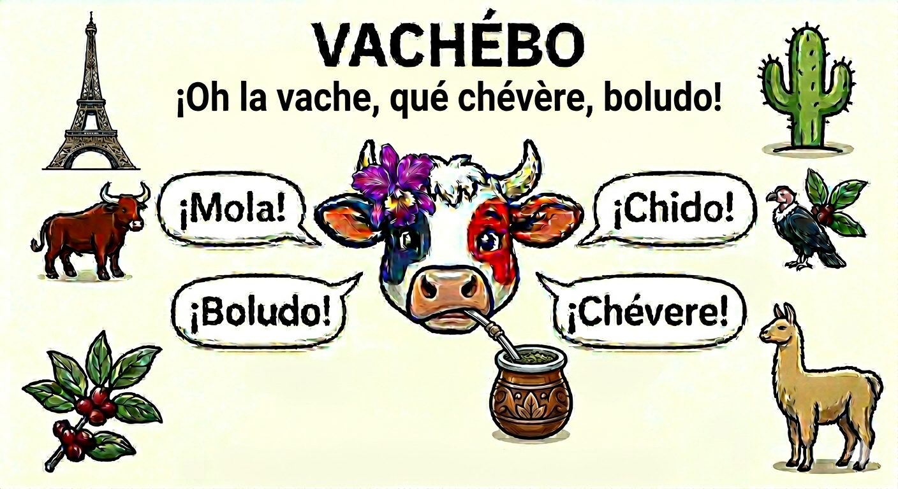

Choisis ta langue · Elige tu idioma
App gratuite — idéale pour les grands débutants.
Cette appli te guide pas à pas — sans inscription ni téléchargement obligatoire. Elle fonctionne directement dans ton navigateur, et tu peux l'installer sur ton écran d'accueil pour y accéder comme une vraie app.
Elle est organisée en deux modes et deux niveaux :
Le Quiz et les Étoiles ⭐ : après les cartes flash, un Quiz te teste. Jusqu'à 3 étoiles selon ton score :
Ce Guide est accessible à tout moment via le bouton ❓ dans la barre de navigation en bas.
L'appli utilise la synthèse vocale du navigateur (Web Speech API). L'audio français et espagnol est disponible sur la plupart des appareils — si ce n'est pas le cas, suis les instructions ci-dessous.
Si l'audio ne fonctionne toujours pas, le problème vient probablement d'un réglage spécifique à ton modèle. Les équipes support peuvent t'aider :
🤖 Support Google / Android · 🍎 Support Apple · 📱 Support Samsung · 💻 Support Microsoft
Pour tout autre fabricant (Xiaomi, Oppo, OnePlus…), recherche « synthèse vocale + [nom de ton téléphone] » sur le site officiel du fabricant.
L'onglet Répète utilise le microphone pour pratiquer la prononciation :
Envie de recommencer un module à zéro ? Tu peux effacer tes étoiles et repartir de la base.
Une fois installée, l'app fonctionne entièrement hors ligne.
Tu peux sauvegarder trois types de contenus en PDF :
Pas de meilleure méthode unique — chacune a ses forces. L'idéal, c'est de les combiner !
Un grand merci à Fédérico Calo (Architecte Développeur Web) pour son aide technique précieuse tout au long du projet.
Merci également à mes parents pour leur travail de relecture, leurs corrections sur les traductions et leurs conseils sur l'ergonomie de l'application.
Après plus de 10 ans dans le géomarketing — études de marché, analyses d'implantation — je suis en reconversion vers la gestion de projets. Mon profil est volontairement polyvalent : Scrum Master, Product Owner, Chef de Projet, Business Analyst ou AI Project Manager selon les besoins.
VACHÉBO est née de mon immersion de 8 mois en Amérique du Sud en 2022, de mes amitiés hispanophones, et de ma curiosité d'apprendre à développer une application web avec l'IA. J'avais envie de créer un outil qui facilite vraiment l'apprentissage de l'espagnol — avec ses vraies variantes régionales, car le castillan d'Espagne n'est pas le même que l'argentin ou le mexicain. Et dans l'autre sens, pour que mes amis hispanophones puissent apprendre le français depuis leur propre variante.
VACHÉBO est pensée avant tout pour les débutants. Ici, tout est conçu pour démarrer en douceur, progresser à son rythme et garder la motivation.
L'application grandit avec mon réseau : quand de nouveaux contacts me font découvrir d'autres variantes, je les intègre. C'est un projet vivant, pensé pour des gens réels.
Cette appli est faite pour toi — chaque retour compte vraiment !
Esta app te guía paso a paso — sin registro ni descargas obligatorias. Funciona directamente en tu navegador, y puedes instalarla en tu pantalla de inicio para acceder a ella como una app de verdad.
Está organizada en dos modos y dos niveles :
El Quiz y las Estrellas ⭐ : tras las tarjetas flash, un Quiz te evalúa. Hasta 3 estrellas según tu puntuación :
Esta Guía está accesible en todo momento desde el botón ❓ en la barra de navegación inferior.
La app usa la síntesis de voz del navegador (Web Speech API). El audio en español y francés está disponible en la mayoría de dispositivos — si no es así, sigue estas instrucciones.
Si el audio sigue sin funcionar, el problema probablemente viene de un ajuste específico de tu modelo. Los equipos de soporte pueden ayudarte :
🤖 Soporte Google / Android · 🍎 Soporte Apple · 📱 Soporte Samsung · 💻 Soporte Microsoft
Para cualquier otro fabricante (Xiaomi, Oppo, OnePlus…), busca «síntesis de voz + [nombre de tu teléfono]» en el sitio oficial del fabricante.
La pestaña Repite usa el micrófono para practicar la pronunciación :
¿Quieres empezar un módulo desde cero? Puedes borrar tus estrellas y volver al principio.
Una vez instalada, la app funciona completamente sin conexión.
Puedes guardar tres tipos de contenido en PDF :
No hay un único método perfecto — cada uno tiene sus puntos fuertes. ¡Lo ideal es combinarlos!
Un gran agradecimiento a Fédérico Calo (Arquitecto Desarrollador Web) por su valiosa ayuda técnica a lo largo del proyecto.
Gracias también a mis padres por su trabajo de corrección, sus ajustes en las traducciones y sus consejos sobre la ergonomía de la aplicación.
Tras más de 10 años en geomarketing — estudios de mercado, análisis de implantación — estoy en reconversión hacia la gestión de proyectos. Mi perfil es deliberadamente polivalente : Scrum Master, Product Owner, Jefe de Proyecto, Business Analyst o AI Project Manager según las necesidades.
VACHÉBO nació de mi inmersión de 8 meses en América del Sur en 2022, de mis amistades hispanohablantes, y de mi curiosidad por aprender a desarrollar una app web con IA. Quería crear una herramienta que facilite de verdad el aprendizaje del español — con sus auténticas variantes regionales, porque el castellano de España no es lo mismo que el argentino o el mexicano.
VACHÉBO está pensada ante todo para los principiantes. Aquí todo está diseñado para empezar con calma, avanzar a su ritmo y mantener la motivación.
La aplicación crece con mi red : cuando nuevos contactos me hacen descubrir otras variantes, las integro. Es un proyecto vivo, pensado para personas reales.
Esta app está hecha para ti — ¡cada comentario cuenta de verdad!